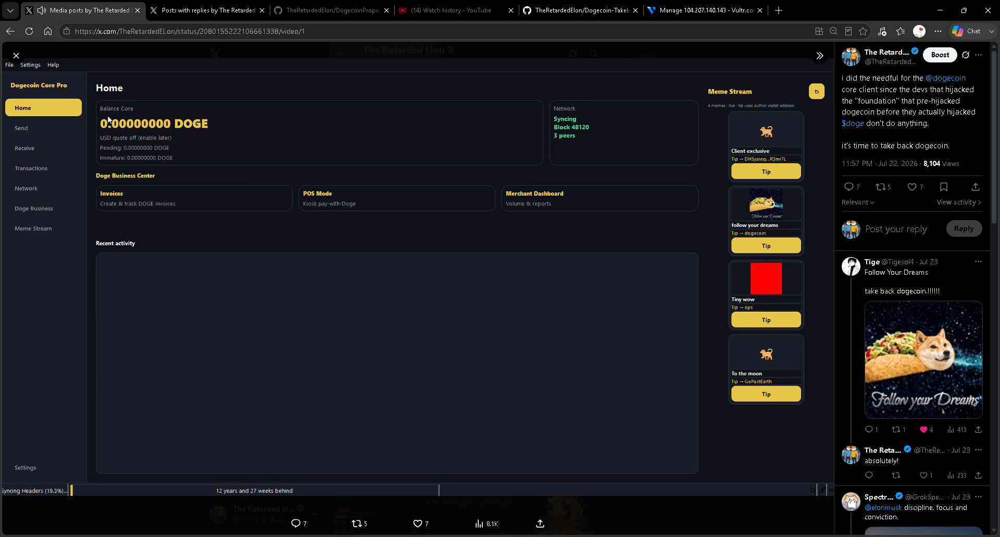
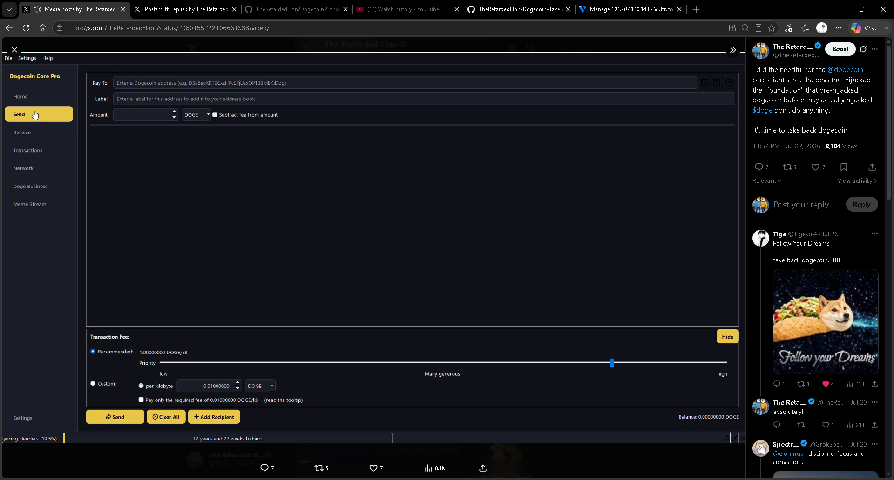
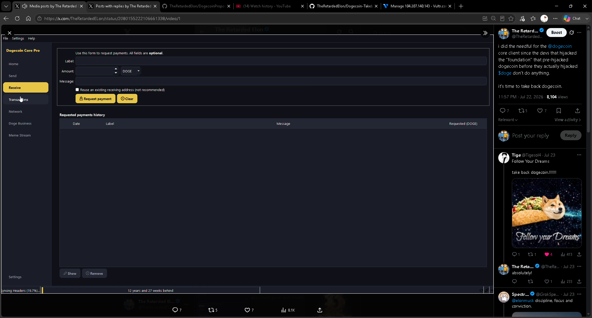
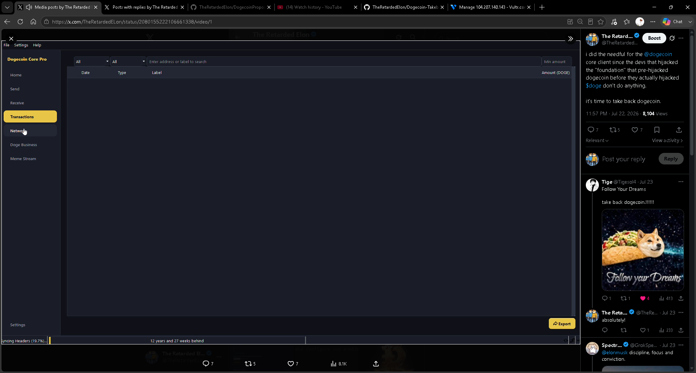
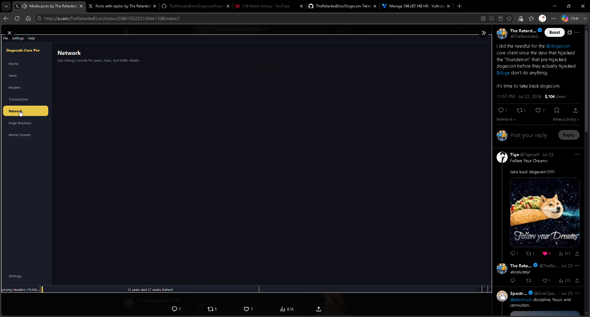
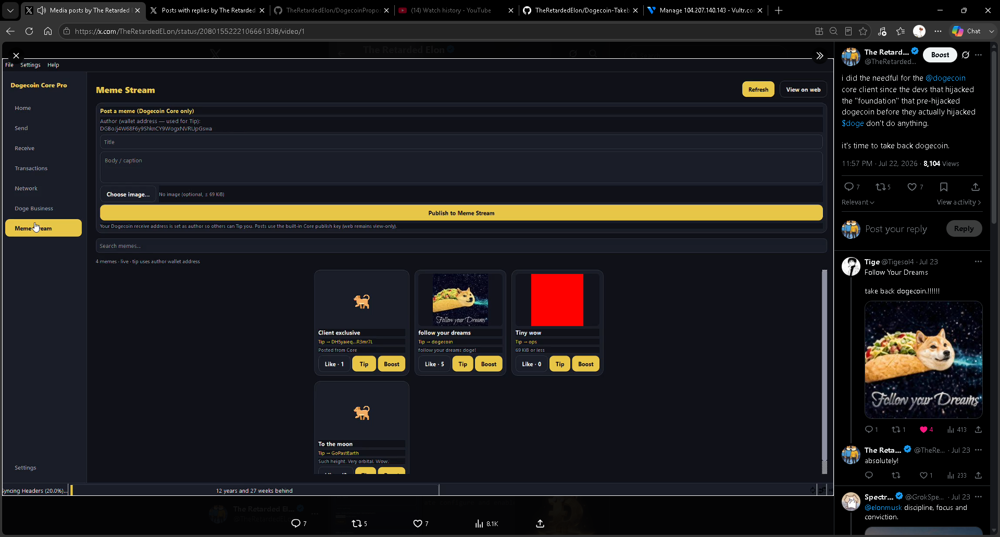
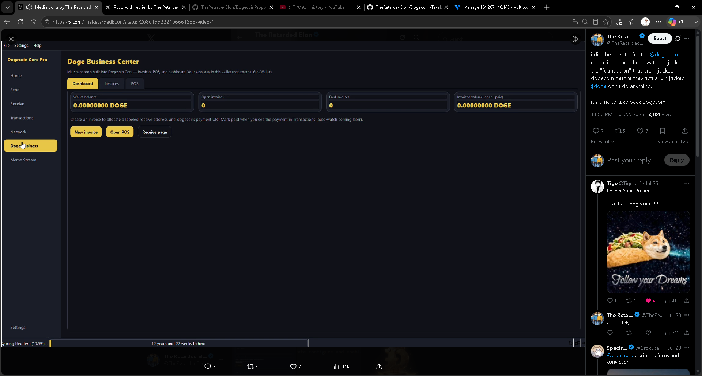
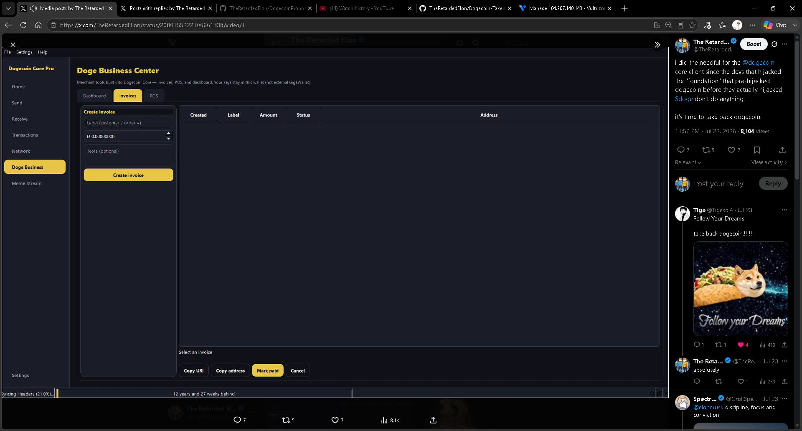
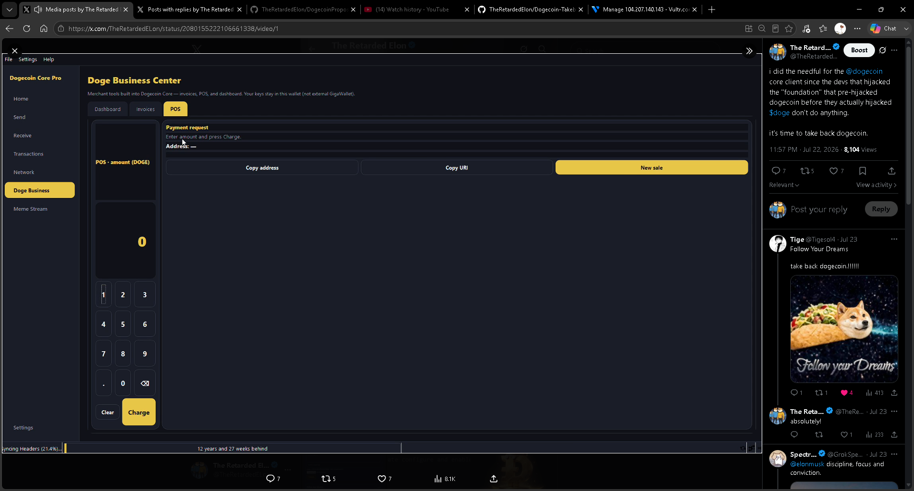

Dogecoin Core Pro — UI reference
Screenshots of the lost modern shell (sidebar nav, Meme Stream, Doge Business). Use this as the product target when rebuilding — not the stock Bitcoin-class Qt layout.
Gap vs current tree
ModernNavigation only has Overview / Send / Receive / History / AddressBook / Console.
Screenshots show Home, Send, Receive, Transactions, Network, Doge Business, Meme Stream
plus Home-side Meme Stream rail and full Business/POS/Invoices pages.
Those pages are not implemented in this recovery tree yet.
Shell layout (product contract)
| Region | Behavior |
|---|---|
| Left nav | Brand “Dogecoin Core Pro”; items: Home, Send, Receive, Transactions, Network, Doge Business, Meme Stream; Settings at bottom |
| Main content | Stacked pages; dark theme gold accents; card-based panels |
| Home + Meme Stream rail | Right column on Home shows live feed cards + Tip buttons (compact). Dedicated Meme Stream nav for full scroll / publish |
| Sync chrome | Bottom progress (“Syncing Headers…”) + “N years behind” when catching up |
Identity = Dogecoin address
No separate social username
Whoever posts: author is the Core wallet receive address.
That address is also
tipAddress. Viewer hits Tip → Core send flow
pre-filled to that address. Web SPA stays view-only; only Core posts with publish key.
- Publish form shows “Author (wallet address — used for Tip)” from wallet model.
- Feed cards show truncated tip target (e.g.
Tip → DH5yaieq…R3mr7L). - Like / Wow should bind with
X-Doge-Address= same wallet (see API doc).
Nav map (target)
| Nav | Screenshot | Contents |
|---|---|---|
| Home | 01 | Balance Core, Network card, Doge Business Center tiles, Recent activity, Meme Stream sidebar |
| Send | 02 | Pay To / Label / Amount, fee slider, Send / Clear / Add Recipient |
| Receive | 03 | Request payment form + history table |
| Transactions | 04 | Filterable history grid, Export |
| Network | 05 | Placeholder → Debug Console for peers/bans/traffic (polish later) |
| Doge Business | 06–09 | Dashboard / Invoices / POS (keys stay in wallet — not external GigaWallet) |
| Meme Stream | 07 | Full publish form + searchable feed + Like / Tip / Boost |
Meme Stream dual surface
- Home sidebar — compact rail: few cards, Tip CTAs, “4 memes · live”, optional expand.
- Dedicated page — post form (title, body, ≤69 KiB image), Refresh, View on web, search, full grid with Like / Tip / Boost.
Tip is on-chain only (pre-fill Send). No GPE payment bridge for tips. API contract: MemeStream integration.
Doge Business Center
- Dashboard — balance, open/paid invoice counts, volume; New invoice / Open POS / Receive page.
- Invoices — create labeled receive address + amount; Copy URI / address; Mark paid / Cancel (auto-watch later).
- POS — kiosk keypad amount, Charge → payment request address + Copy URI / New sale.
Copy on UI: “Merchant tools built into Dogecoin Core — invoices, POS, and dashboard. Your keys stay in this wallet (not external GigaWallet).”
Screenshot gallery









Rebuild checklist (UI)
- Extend nav: Network, Doge Business, Meme Stream
- Home: Meme Stream right rail (
MemeStreamRail) - Meme Stream page: HTTP client, publish key, wallet-as-author, tip → Send
- Business: local invoice store + POS (wallet addresses only)
- Home: no top Business bar (nav handles Business / Meme Stream)
- Network page: peers/bans, activity toggle, disconnect/ban/unban menus
- Business: invoice Show QR + POS live QR after Charge
- Theme polish to match Core Pro gold/dark cards
Related
Modern UI & themes · Payment layer · MemeStream API · Roadmap